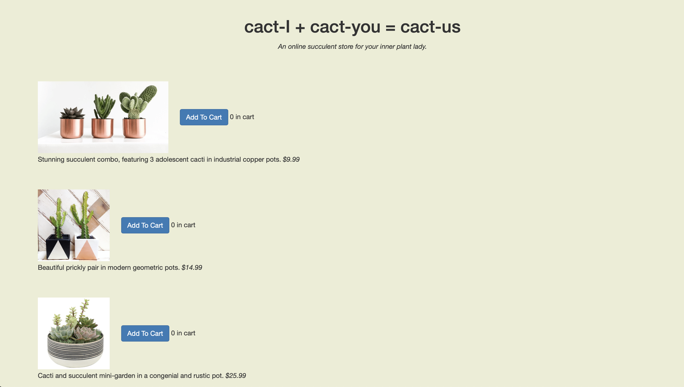
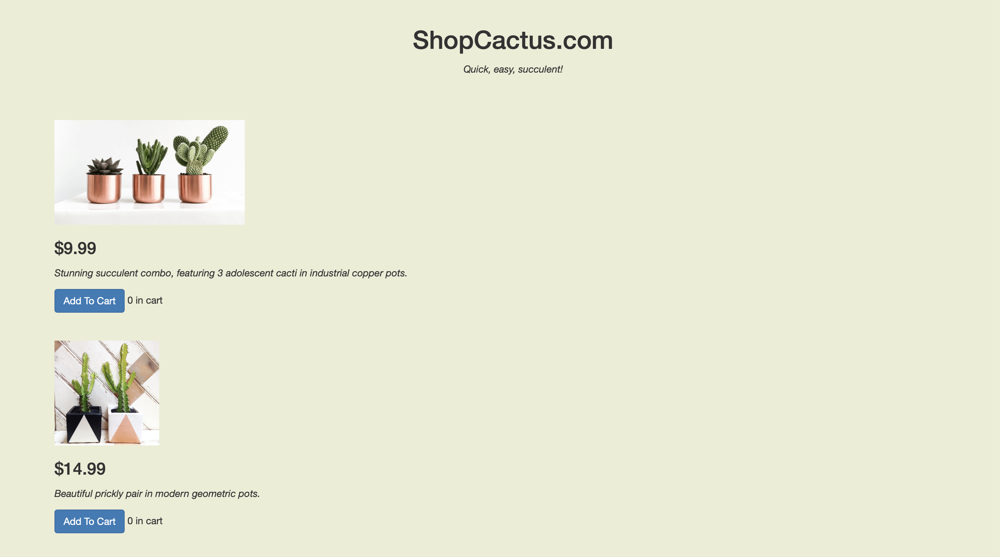
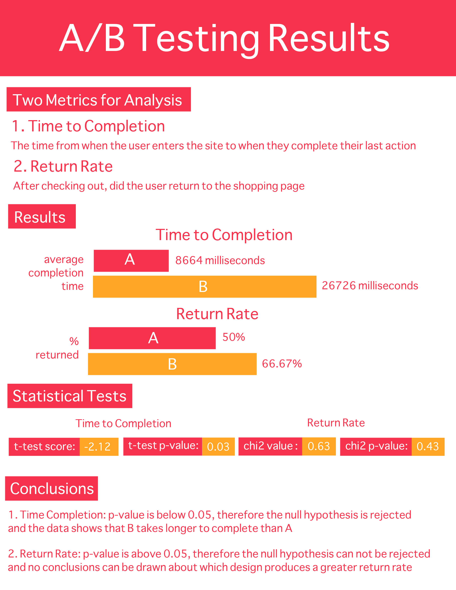

A/B Testing
Brown University ~ UI / UX Design ~ October 2020
In this project, I applied A / B testing to determine which website design aided in user efficiency. Starting with the design idea I wanted to test, I focused on the layout to see if a more hierarchical structure allowed users to checkout faster. I created a website that randomly swapped between the two designs and recorded user data from it. Lastly, I ran statistical tests to see if I could reject my null hypothesis.
Design A & Design B
- Below are two designs for a website that sells cacti (A on left, B on right)
- The two designs are exactly the same except for a few changed features:
- Design B arranges the text in a more hierarchical fashion. This places the price at the top which makes it more prominent
- Design B also changes the name of the site to something more generic. This is meant to not be as distracting as the original title


Hypotheses
- There are two metrics I will be using to judge which design is superior: time to completion and return rate. Each metric will have a null and alternative hypothesis used for statistical testing
- Time to Completion : The time from when the user enters the site to when they complete their last action
- Null Hypothesis: There is no difference between design A and B in terms of their time to completion
- Alternative Hypothesis: B will have a shorter time to completion. I believe this will be the case because the prices are more highlighted and will therefore cause products to be be more efficiently chosen
- Return Rate : After checking out, did the user return to the shopping page
- Null Hypothesis: There is no difference between design A and B in their return rates
- Alternative Hypothesis: A will have a greater return rate. I believe this will be the case because the layout for design A is less clear and may require users to return to the shopping page to fix their order prior to checkout
Data Collection
- To test my hypothesis, I collected user data. A total of 22 users interacted with the designs. They were asked to select $150 worth of products and then checkout. It is important to note that this money was not their own and they were not going to receive the products they ordered. All user interaction with the design was tracked down to the millisecond and categorized by type of action (button press, checkout, reload page)
Infographic
- Below are the results from running statistics tests on the data I collected

Conclusions
- Return Rate: due to the p-value for the chi2 test being above 0.05, I was not able to draw any conclusions from the data
- Time to Completion: the p-value for the t-test was below 0.05, so I was able to conclude that B takes longer to complete than A. While I am able to reject the null hypothesis, the data goes against my alternative hypothesis. I had hypothesized that B would take a shorter amount of time to complete, given its more organized layout. I believe this hypothesis did not come to fruition because of the way in which the AB tests were presented; users were shown many AB tests, all with the same A design. Whenever a novel B design appears, I hypothesize that users took more time to observe the new design, resulting in a longer time to completion.
- Limitations Affecting Results
- Small Sample Size : Given I was only able to test 22 users, it is unclear if this data can generalize to larger demographics
- Homogeneous Sample : All of the users interviewed were college students in a UI/UX course. This likely made my data biased
- Relative AB Testing : As discussed in my time to completion note, multiple AB tests were taken back to back which may have affected how user behaved
- Efficacy : With the users not spending their own money or receiving any of the products, there is a lack of real world application. The behavior of users may differ when there are actual outcomes related to their actions
- Design Principles Affecting Results
- Whether the longer time to completion was positive or negative, the data shows that even the minor change of organizing text vertically compared to horizontally affects the users. This demonstrates the power of text hierarchies in directing a user's actions
- The return rate was not significantly different between the two designs, likely because the checkout pages were the same. In order to prompt an action, I would have needed to apply some of the design principles; for example, using colors or animations to incentivize users to return to the shopping page